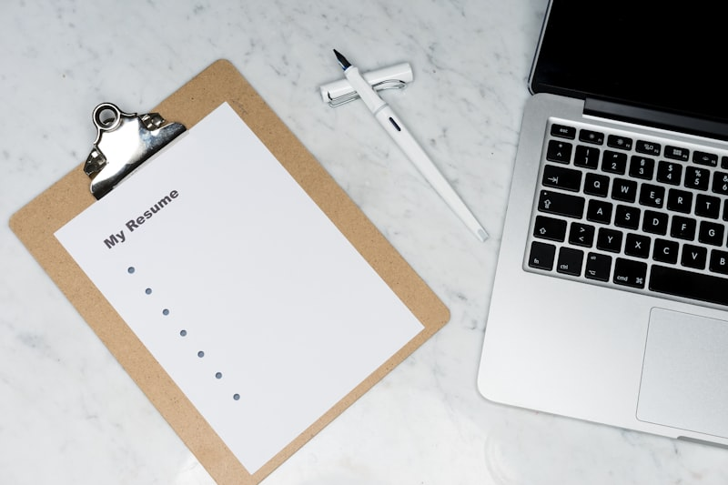
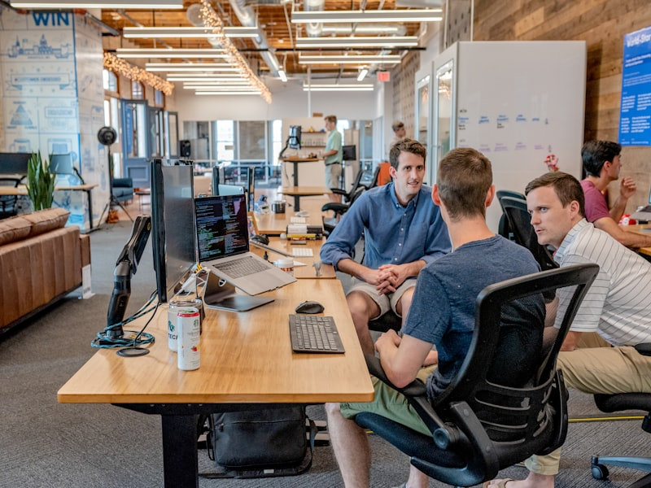
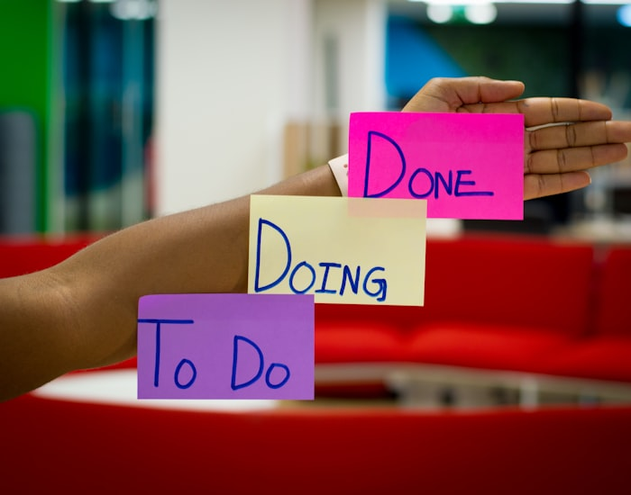

Plataformas online
- LinkedIn — perfil profissional e vagas direcionadas.
- Gupy, Catho, Indeed, InfoJobs — sites de recrutamento.
- Programathor, GeekHunter — foco em TI e desenvolvimento.
- Trampos.co — estágios e primeiras oportunidades.
Guia para estudantes de ADS
Informações práticas sobre onde procurar vagas, como montar um currículo, se preparar para entrevistas e se comunicar de forma profissional.


O primeiro passo é saber onde as oportunidades aparecem. Combine várias fontes para aumentar suas chances — especialmente vagas de estágio e júnior em tecnologia.

Seu currículo é a primeira impressão. Para quem está começando, o foco deve ser objetivo, clareza e projetos — mesmo que ainda não tenha experiência formal.
Nome, contato, resumo objetivo, formação, habilidades, projetos e cursos relevantes.
2 ou 3 linhas sobre quem você é, o que estuda e o que busca (estágio, júnior, área).
Inclua trabalhos de ADS: linguagens, ferramentas e o que o projeto resolveu.
Máximo 1 página, fonte legível, PDF e nome do arquivo profissional (ex: Joao_Silva_Curriculo.pdf).

Entrevista não é improviso. Quanto mais você pesquisar e praticar, mais confiante ficará para responder com clareza.
Perguntas comuns que você deve preparar:
Tenha também perguntas para fazer ao entrevistador sobre a equipe, projetos e expectativas.

Postura, pontualidade e respeito contam tanto quanto o conteúdo das respostas. Mostre profissionalismo desde o primeiro contato.
Chegue ou entre na call com 5 a 10 minutos de antecedência.
Vista-se de forma adequada ao ambiente — arrumado, limpo e confortável.
Mantenha contato visual, ouça com atenção e evite interromper.
Silencie notificações e não consulte o telefone durante a conversa.
Se não souber algo, diga com sinceridade e mostre vontade de aprender.
Envie um e-mail ou mensagem breve agradecendo após a entrevista.

E-mails, mensagens e currículos exigem linguagem clara e respeitosa. Isso transmite maturidade e facilita o contato com recrutadores.
"Oi, blz? Vi a vaga ae e quero mto trampar c vcs!!!"
"Prezado(a), me chamo João Silva, estudante de ADS. Tenho interesse na vaga de estágio em desenvolvimento e gostaria de saber mais sobre o processo seletivo. Atenciosamente, João Silva."
Informações complementares que fazem diferença na transição da faculdade para o mercado.

Mostre projetos reais: código organizado, README explicando o projeto e tecnologias usadas.
Participe de eventos, conecte-se no LinkedIn e mantenha contato com colegas da área.
Chegue cedo, observe a rotina, pergunte quando tiver dúvidas e anote orientações importantes.

Conheça carteira assinada, contrato, jornada, férias e canal de RH para dúvidas trabalhistas.

Marque o que você já fez. Seu progresso fica salvo no navegador.
0 de 7 concluídos